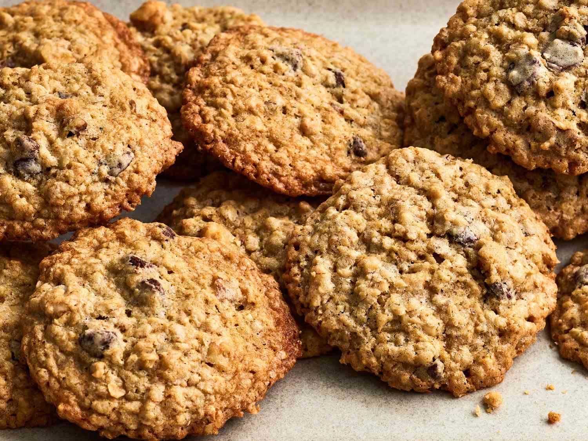

Oatmeal Cookies

Ingredients
- 110g Sugar
- 110g Caster Sugar
- 110g Brown Sugar
- 1 Egg
- 2 Tablespoons Water
- 1 Teaspoon Vanilla Extract
- 250g Porridge Oats
- 110g Self Raising Flour
- 1 Teaspoon Salt
- 110g Raisins/Chocolate Chip
Method
- Preheat the oven to 180°C
- Cream the butter in a large bowl until soft. Add the sugars and beat until the mixture is light and fluffy. Add the egg, water and vanilla extract while still beating. Reduce the speed and gently mix in the oats, flour, salt and raisins to form a dough.
- Using your hands, roll the dough into walnut-sized balls and place spaced slightl apart on two baking trays (no need to grease or line).
- Bake in the oven for 15-25 minutes or until light golden brown, but still soft in the centre.
- Allow to cool on the trays for a minute before transferring to a wire rack to cool.